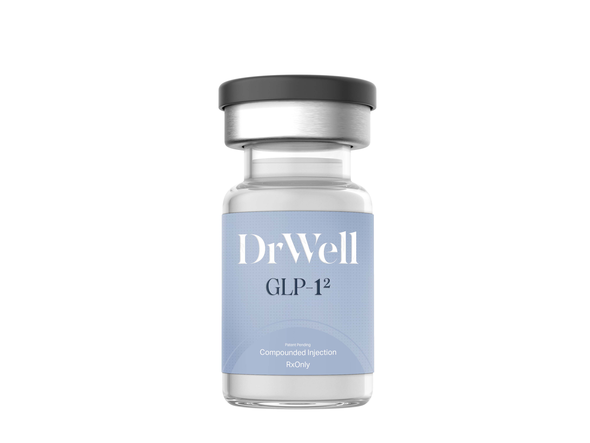

Expand Your Practice. Differentiate Your Care.
As GLP-1 therapies become increasingly commoditized, differentiation becomes critical. Learn more about GLP-1² and how innovation in formulation and clinical application can position your practice for long-term success.

GLP-1 receptor activity extends beyond metabolic regulation into the central nervous system, particularly areas involved in reward and addiction.
Tirzepatide activates both GLP-1 and GIP receptors. Exhibits biased agonism favoring G protein signaling over β-arrestin recruitment.
Acts on the mesolimbic pathway to reduce alcohol-associated reward signaling and addictive behaviors.
Influences hypothalamic and brainstem pathways involved in appetite and compulsion.
Targets the centers of the brain responsible for habit forming. May reduce compulsive alcohol-seeking behavior.
Improves glycemic variability, reducing physiologic triggers for cravings and enhancing overall metabolic health. A dual-pathway approach that addresses both the neurological and metabolic dimensions of addiction.
Traditional AUD treatments focus on distinct and separate pathways:
GLP-1² introduces a completely novel complementary pathway: Targeting reward biology and metabolic drivers simultaneously.
GLP-1² is not just a therapy—it's a program. And delivering it effectively requires more than simply prescribing.
LegitScript-supported marketing pathways. Done-for-you campaigns that drive qualified patients directly to your practice.
Asynchronous, compliant patient evaluations. Streamlined qualification for AUD and related indications.
Seamless prescribing workflows with vetted pharmacy partners. Transparent pricing and supply chain reliability.
Build recurring revenue through structured programs. Combine GLP-1² with wellness, behavioral, or adjunct therapies.
Support for asynchronous care models (state-dependent). Medical director collaboration available where required. Scale your practice nation-wide with full compliance.